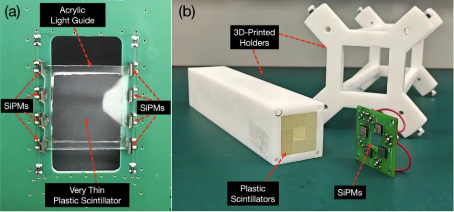
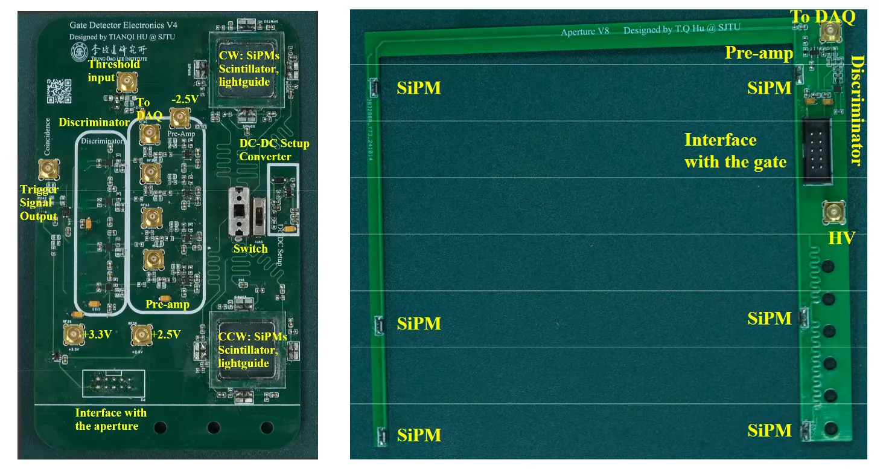
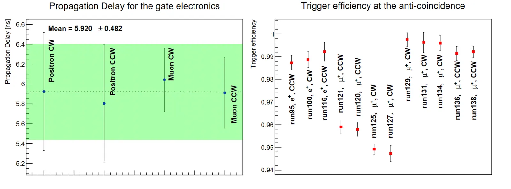

Two new studies mark key milestones toward the world’s most sensitive search for the muon electric dipole moment.
The PSI muEDM experiment aims to probe physics beyond the Standard Model by improving the sensitivity to the muon’s electric dipole moment (EDM) to 6 × 10⁻²³ e·cm—four orders of magnitude beyond the current limit. Detecting a nonzero EDM would reveal new sources of CP violation, offering clues to the Universe’s matter–antimatter imbalance.

Fig. 1 – schematic of the muEDM setup
In preparation for the experiment’s Phase I, we have developed and validated a fast muon trigger detector and its front-end electronics, essential for capturing muons entering the storage solenoid and synchronizing the activation of a pulsed magnetic kicker.
The first step, reported in Radiation Detection Technology and Methods (2025), described the design and beam testing of a prototype trigger detector consisting of a 100 µm-thin gate scintillator and a surrounding telescope array, both read out by silicon photomultipliers (SiPMs). Using 27.5 MeV/c muons at PSI’s πE1 beamline, the team measured high timing precision, optimal light yield, and excellent agreement with Geant4 simulations, confirming the system’s ability to select storable muons while rejecting background particles.


Building on this foundation, the collaboration developed the fast front-end readout electronics, presented in IEEE Transactions on Nuclear Science (2025). The compact system integrates preamplifiers, discriminators, and anti-coincidence logic operating inside a 3 T magnetic field, achieving a total signal latency below 15 ns. During beam tests, the electronics demonstrated sub-6 ns propagation delay and >99 % anti-coincidence efficiency, validating performance under experimental conditions.




With both detector and electronics prototypes now validated, installation and commissioning for Phase I of the muEDM experiment are underway at PSI, bringing researchers a step closer to uncovering new sources of CP violation.